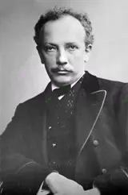

Till Eulenspiegels lustige Streiche
16 min
Recording
- Till Eulenspiegels lustige Streiche, Op. 28United States Navy Band · 200115:48
Strauss’s Till Eulenspiegels lustige Streiche, Op. 28, follows Till as he rides through a market, impersonates a priest and makes fools of learned professors before the law catches up with him. The United States Navy Band plays it in Herb Weber’s transcription; a winding tune and a short laughing figure mark Till in each disguise.
Listening notes · joins
- Prologue in F major
The work opens in F major. A winding tune introduces Till, and a shorter, sharper figure gives him his laugh. Both motifs return throughout the piece as Till goes from one scrape to the next.
- Two Till themes, horn and clarinet
Strauss introduces Till with two themes. The first is a winding tune for horn, the second a short, clipped figure for clarinet. Both themes return later in altered forms, and their rhythms stay the same.
- Strauss on the work’s intentions
Asked many years later whether Till had any “metaphysical” intentions, Strauss replied: “Oh, no—I only wanted to give the people in the concert hall a good laugh for once.”
- The Eulenspiegel stories
The old Eulenspiegel stories send their rogue from town to town, where he upsets princes, clergy, craftsmen and scholars. The earliest surviving written accounts date from nearly two centuries after the fourteenth-century life assigned to him. Strauss gave him a new ending on the gallows.
- Ride through the market
Till rides straight through the market women. Strauss marks the ride with a cymbal crash and flutter-tongued trumpets. A sudden pause follows, and Till escapes in his seven-league boots.
- Till and the girls, bars 209–232
Strauss’s own label for this scene is Till “exchanging dainty courtesies with pretty girls”. Solos for violin and woodwind accompany the flirtation. Till falls for one of the girls, and the music becomes more ardent as he woos her.
- Rebuff and vow of revenge
The girl rejects him politely. Strauss’s label puns on the German idiom for a rebuff: “However fine, a basket still signifies refusal.” Till is furious; the orchestra cuts off, and four horns play his theme in unison as he vows revenge on all mankind.
- The professors, fugato in A minor
The professors enter in A minor, played by bassoon and bass clarinet. Till puts his questions to them, and their answers form a fugato. One part starts a phrase, another imitates it, and further voices join.
- The “big grimace”, full orchestra
Till sets the professors a few outrageous problems and leaves them baffled. From a distance he turns back for what Strauss labels a “big grimace”, a long, dissonant chord for the full orchestra.
- Till’s street tune, bars 375–382
Strauss labelled this tune “Till’s street ditty”. It is a jaunty melody in the manner of an operetta by one of the other Strausses. The whistled tune soon stops, and a still, ominous passage follows.
- Letter to Franz Wüllner, 1895
On 20 October 1895 Strauss wrote to the conductor Franz Wüllner: “This time let’s let these folks themselves crack the nuts that the rogue delivers to them.” Wüllner conducted the première in Cologne on 5 November.
- Return of Till’s horn theme
After the quiet passage, Till’s theme returns. Earlier themes are combined as the tempo increases. The priest’s melody is drawn in and returns in D major just before the arrest.
- Trial scene in F minor
At bar 577 a drum roll begins the ff trial in F minor. The heavy brass play against short replies from Till’s theme, and the fear motif returns. The scene ends with the execution.
- The hanging, bars 615–619
The sentence is carried out. Strauss’s label in the score reads: “Up the ladder! There he swings, the air is squeezed out of him, a last jerk.” A strangled clarinet depicts the hanging.
- Epilogue, bars 632–657
In the epilogue (bars 632–657) the opening returns in F major, with a cadence in F major at bar 636. Strauss continues the phrase past the point where it originally broke off. Till’s motifs then interrupt for the final bars.
Joins
- Cymbal crash into the market scene
Till’s tune breaks into short, quiet fragments. A cymbal crash starts the market scene at bar 135, with flutter-tongued trumpets among the rushing notes. Fragments of Till’s theme drive the passage forward.
- The priest’s tune in B♭ major
A gap follows the escape before the priest’s tune begins. The tune is set in measured, paired phrases in B♭ major (bars 179–194), marked gemächlich (at ease), and is accompanied by chords in the wind. Till’s laughing figure soon interrupts it.
- Return of the horn theme
The quiet, held passage ends and the winding horn theme returns. Strauss brings back the F major and the quick, irregular phrases of the opening; Hepokoski places this return at bar 429. The theme passes between parts again, and a new crescendo begins at bar 449.
- Drum roll and F-minor trial
The priest’s tune is played in D major in bars 567–572. At bar 577 a diminished-seventh chord and a fortissimo drum roll cut across it, and the heavy F-minor brass of the trial enters. Short, exposed fragments of Till’s music alternate with these brass statements.
- F major after the gallows
After the execution, six separated F-major chords in bars 624–631 fall from piano to pianissimo. At bar 632 the opening phrase returns at half speed, marked Doppelt so langsam. It reaches an F-major cadence at bar 636 and continues into the longer epilogue.